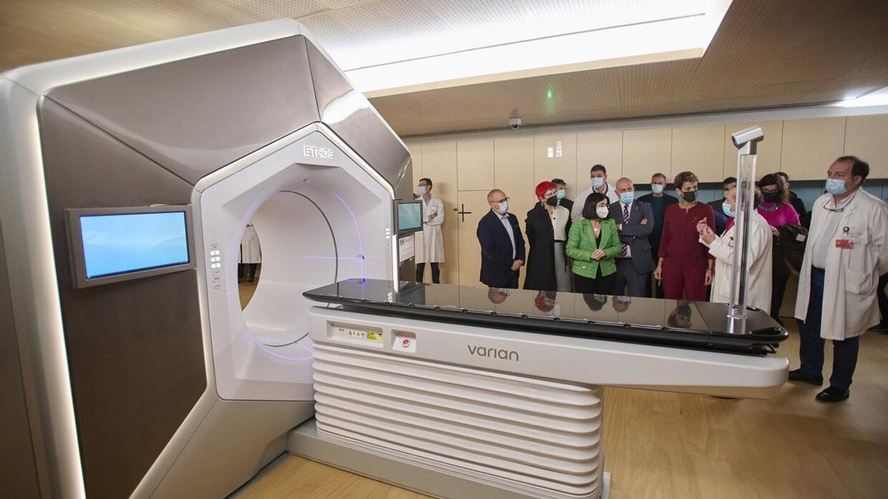

Tratamientos Oncológicos Personalizados Gracias a la IA
Publicado el 5 de octubre de 2024
La IA está revolucionando el tratamiento del cáncer al permitir la creación de terapias personalizadas. Al analizar el perfil genético de cada tumor, los algoritmos de IA pueden predecir la respuesta del paciente a diferentes fármacos y diseñar tratamientos más efectivos.
Esta aproximación personalizada minimiza los efectos secundarios y aumenta las tasas de éxito en la lucha contra el cáncer.